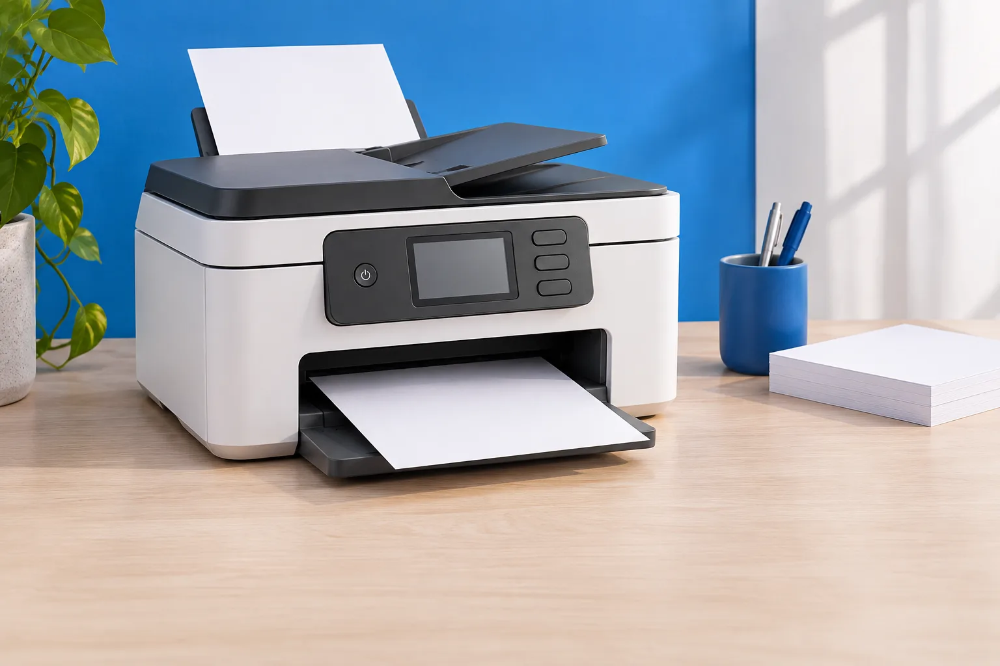

CASA E ESCOLA
Melhor impressora para casa e escola
Trabalho da escola, boleto, documento e foto colorida de vez em quando, com tinta barata.

Melhor custo-benefício para casaHP Smart Tank 581
CURADORIA TECHAPROVADO · 2026
A impressora barata pode sair cara na tinta, e a mais cara pode economizar em pouco tempo. Separamos 15 modelos em 3 perfis, do custo-benefício ao top de linha, e dizemos para quem cada um vale a pena.

NOSSA LEITURA
Antes de comparar preço, pense em quantas páginas você imprime por mês e se precisa de cor. Pouco: uma jato de tinta barata. Muito, em cores: tanque de tinta. Só preto e de vez em quando: laser, que não seca parada.
COMECE POR AQUI
CASA E ESCOLA
Trabalho da escola, boleto, documento e foto colorida de vez em quando, com tinta barata.
LASER PRETO E BRANCO
Documento, contrato e apostila em preto, com texto nítido e toner que não seca se ficar parado.

ESCRITÓRIO E ALTO VOLUME
Muitas páginas por mês, alimentador para digitalizar pilhas de folhas e rede para o escritório todo.

A FICHA, TRADUZIDA
01 - TANQUE, CARTUCHO OU LASER
Cartucho: a impressora é barata e a tinta é cara. Compensa para quem imprime pouquíssimo.
Tanque de tinta: a impressora custa mais, mas os frascos de reposição imprimem milhares de páginas por pouco. É a melhor para quem imprime em cores com frequência.
Laser: usa toner em pó, imprime rápido e não seca parada. É a melhor para texto em preto e branco.
02 - MULTIFUNCIONAL
Multifuncional é a impressora com scanner em cima: copia RG, digitaliza contrato e manda o PDF para o e-mail.
Para casa e escritório, vale quase sempre: a diferença de preço é pequena.
Se você digitaliza documentos com várias folhas, procure ADF (alimentador automático de documentos), que puxa as folhas sozinho.
03 - FRENTE E VERSO
No frente e verso automático (duplex), a impressora vira a folha sozinha. No manual, você recoloca as folhas na bandeja.
Para apostila, TCC e documentos longos, o automático economiza papel pela metade e evita erro de ordem.
Nesta seleção, têm frente e verso automático a Epson L4360, a Canon G6010, a HP Smart Tank 794, a Epson L14150 (A4) e a Brother DCP-B7535DW.
04 - CONEXÃO
USB liga a impressora a um computador só. Wi-Fi deixa imprimir de qualquer aparelho da casa. Wi-Fi Direct liga o celular direto na impressora, sem roteador.
Rede cabeada (Ethernet) é a mais estável para escritório, com vários computadores.
Os apps HP Smart, Epson Smart Panel e Canon PRINT imprimem e digitalizam pelo celular.
05 - CUSTO POR PÁGINA
Divida o preço da tinta ou do toner pelo número de páginas que ele rende. Em tanque de tinta, cada página custa centavos; em cartucho, pode custar bem mais.
O rendimento informado pelos fabricantes usa páginas de teste com pouca tinta: fotos e páginas cheias rendem menos.
Use tinta original ou de boa procedência: tinta ruim entope a cabeça de impressão, e o conserto pode custar quase o preço da impressora.
A CURADORIA EM DETALHE
15 modelos da pesquisa
PERFIL · 5 MODELOS, DA ENTRADA AO TOP DE LINHA
Para casa, a impressora de tanque de tinta é a que mais economiza: os frascos de reposição imprimem milhares de páginas por uma fração do preço dos cartuchos. A escada começa numa jato de tinta com cartucho, para quem imprime pouco, e sobe para tanques com frente e verso automático.

CASA · ENTRADA 1 de 5
Jato de tinta com cartucho · imprime, copia e digitaliza · Wi-Fi dual band
Ver preço na AmazonPOR DENTRO DA ESCOLHA
A multifuncional mais barata que vale a compra: imprime, copia e digitaliza, tem Wi-Fi de banda dupla (2,4 e 5 GHz) para imprimir pelo celular e um ano de garantia HP.
A DeskJet 2975 é a porta de entrada barata. Ela compensa para quem imprime pouco; a partir de umas 50 páginas por mês, o tanque de tinta da HP Smart Tank 581 se paga rápido.
| Tipo | Jato de tinta com cartucho |
|---|---|
| Funções | Imprime, copia, digitaliza |
| Conexão | Wi-Fi 2,4 e 5 GHz, USB |
| Garantia | 1 ano |
Fonte: ficha e descrição do anúncio, conferidas em 16/11/2026. Dados informados pelo fabricante.

CASA · ALTERNATIVA 2 de 5
Outro caminho: tanque Canon
Tanque de tinta · Wi-Fi · imprime, copia e digitaliza
Ver preço na AmazonPOR DENTRO DA ESCOLHA
A multifuncional de tanque da Canon, com Wi-Fi e sistema que evita o ressecamento da tinta quando a impressora fica parada, com tubo flexível protegido contra a entrada de ar.
A G3110 é a alternativa Canon à HP Smart Tank 581, com preço parecido. As duas economizam muito na tinta; escolha pela marca de assistência mais perto de você.
| Tipo | Tanque de tinta |
|---|---|
| Funções | Imprime, copia, digitaliza |
| Conexão | Wi-Fi, USB |
Fonte: ficha e descrição do anúncio, conferidas em 16/11/2026. Dados informados pelo fabricante.
CASA · CUSTO-BENEFÍCIO 3 de 5
Melhor custo-benefício para casa
Tanque de tinta · até 12 mil páginas com a tinta da caixa · Wi-Fi
Ver preço na AmazonPOR DENTRO DA ESCOLHA
O salto é o tanque: a tinta que vem na caixa imprime até 12.000 páginas em preto ou 6.000 coloridas, segundo a HP. Imprime, copia e digitaliza, com Wi-Fi e app HP Smart para imprimir do celular.
A Smart Tank 581 é a impressora de casa que mais economiza pelo preço: a tinta da caixa dura anos para a maioria das famílias. Para quem imprime em casa, é o ponto de parada.
| Tipo | Tanque de tinta |
|---|---|
| Rendimento da caixa | Até 12.000 pág. preto / 6.000 cor |
| Funções | Imprime, copia, digitaliza |
| Conexão | Wi-Fi, USB, app HP Smart |
Fonte: ficha e descrição do anúncio, conferidas em 16/11/2026. Dados informados pelo fabricante.

CASA · ALTERNATIVA 4 de 5
Outro caminho: tanque Epson
Tanque de tinta · Wi-Fi Direct · imprime, copia e digitaliza
Ver preço na AmazonPOR DENTRO DA ESCOLHA
A EcoTank compacta da Epson, com tanques frontais fáceis de abastecer, Wi-Fi e Wi-Fi Direct para imprimir do celular sem roteador.
A L3250 é a alternativa Epson à HP 581: custa um pouco mais e tem uma das redes de tinta e assistência mais fáceis de achar. Na prática, as duas imprimem parecido.
| Tipo | Tanque de tinta EcoTank |
|---|---|
| Funções | Imprime, copia, digitaliza |
| Conexão | Wi-Fi, Wi-Fi Direct, USB |
Fonte: ficha e descrição do anúncio, conferidas em 16/11/2026. Dados informados pelo fabricante.

CASA · TOP DE LINHA 5 de 5
Top de linha para casa
Tanque de tinta · frente e verso automático · Wi-Fi
Ver preço na AmazonPOR DENTRO DA ESCOLHA
O topo do perfil: tanque EcoTank com impressão frente e verso automática, que economiza papel e tempo, e Wi-Fi. Segundo a Epson, cada kit de tinta equivale a cerca de 30 cartuchos.
A L4360 é a impressora de casa para quem imprime muito: o frente e verso automático faz diferença. Para quem imprime pouco, a HP 581 resolve.
| Tipo | Tanque de tinta EcoTank |
|---|---|
| Frente e verso | Automático |
| Funções | Imprime, copia, digitaliza |
| Conexão | Wi-Fi |
Fonte: ficha e descrição do anúncio, conferidas em 16/11/2026. Dados informados pelo fabricante.
PERFIL · 5 MODELOS, DA ENTRADA AO TOP DE LINHA
A laser imprime com pó (toner), não com tinta líquida: não seca nem entope se ficar semanas parada, imprime rápido e o texto sai nítido. É a melhor escolha para quem imprime só em preto e branco. A escada sobe de só impressora para multifuncional com Wi-Fi e frente e verso.

POR DENTRO DA ESCOLHA
A laser mais barata da seleção: imprime 20 páginas por minuto em preto, e o toner de reposição original, segundo a Brother, rende até 1.500 páginas.
A HL-L1222 é a laser de entrada honesta: barata, rápida e econômica no toner. Para imprimir do celular, a HP 107w do próximo degrau tem Wi-Fi.
| Tipo | Laser monocromática |
|---|---|
| Velocidade | Até 20 ppm |
| Conexão | USB |
| Toner | Até 1.500 páginas |
| Voltagem | 110 V |
Fonte: ficha e descrição do anúncio, conferidas em 16/11/2026. Dados informados pelo fabricante.

LASER · ALTERNATIVA 2 de 5
Outro caminho: laser com Wi-Fi
Laser preto e branco · Wi-Fi Direct · compacta
Ver preço na AmazonPOR DENTRO DA ESCOLHA
A laser compacta da HP com Wi-Fi Direct, para imprimir do celular e do notebook sem cabo. Usa o toner HP 105A (cerca de 1.000 páginas).
A 107w é o desvio para quem quer Wi-Fi na laser. Se você também copia e digitaliza, a HP 135w do próximo degrau vale a diferença.
| Tipo | Laser monocromática |
|---|---|
| Conexão | Wi-Fi Direct, USB |
| Toner | HP 105A, cerca de 1.000 páginas |
| Voltagem | 110 V |
Fonte: ficha e descrição do anúncio, conferidas em 16/11/2026. Dados informados pelo fabricante.
LASER · CUSTO-BENEFÍCIO 3 de 5
Melhor custo-benefício laser
Multifuncional laser · imprime, copia e digitaliza · Wi-Fi
Ver preço na AmazonPOR DENTRO DA ESCOLHA
O salto é multifuncional: imprime, copia e digitaliza em preto, com Wi-Fi e velocidade de 21 páginas por minuto, para até 2.000 páginas por mês.
A 135w junta tudo que um home office em preto e branco precisa: laser rápida, cópia e scanner com Wi-Fi. Para a maioria, é o ponto de parada.
| Tipo | Multifuncional laser monocromática |
|---|---|
| Velocidade | 21 ppm (carta) |
| Funções | Imprime, copia, digitaliza |
| Conexão | Wi-Fi, USB 2.0 |
| Volume | Até 2.000 páginas/mês |
Fonte: ficha e descrição do anúncio, conferidas em 16/11/2026. Dados informados pelo fabricante.

LASER · ALTERNATIVA 4 de 5
Outro caminho: multifuncional Brother
Multifuncional laser · Wi-Fi · bandeja frontal de 150 folhas
Ver preço na AmazonPOR DENTRO DA ESCOLHA
A multifuncional laser da Brother com Wi-Fi e USB, bandeja frontal para 150 folhas e o toner de reposição econômico da marca.
A DCP-L1632W é a alternativa Brother à HP 135w: preço e funções parecidos. O toner da Brother costuma custar menos por página.
| Tipo | Multifuncional laser monocromática |
|---|---|
| Conexão | Wi-Fi, USB |
| Bandeja | 150 folhas |
Fonte: ficha e descrição do anúncio, conferidas em 16/11/2026. Dados informados pelo fabricante.

LASER · TOP DE LINHA 5 de 5
Top de linha laser
Multifuncional laser · frente e verso · Wi-Fi · toner de alto rendimento
Ver preço na AmazonPOR DENTRO DA ESCOLHA
O topo do perfil: multifuncional laser com frente e verso automático, Wi-Fi, impressão até o tamanho ofício e o sistema de toner de alto rendimento da Brother, para quem imprime muito.
A DCP-B7535DW é a laser para volume: o frente e verso e o toner de alto rendimento baixam o custo por página. Para quem imprime pouco, a HP 135w basta.
| Tipo | Multifuncional laser monocromática |
|---|---|
| Frente e verso | Automático |
| Conexão | Wi-Fi, USB |
| Papel | Até ofício |
Fonte: ficha e descrição do anúncio, conferidas em 16/11/2026. Dados informados pelo fabricante.
PERFIL · 5 MODELOS, DA ENTRADA AO TOP DE LINHA
No escritório pequeno, a impressora imprime centenas de páginas por mês e digitaliza documentos com várias folhas. O que conta é velocidade, alimentador automático de documentos (ADF), frente e verso, rede cabeada e custo por página. A escada termina numa impressora A3.

ESCRITÓRIO · ENTRADA 1 de 5
Tanque de tinta só preto · Wi-Fi Direct · multifuncional
Ver preço na AmazonPOR DENTRO DA ESCOLHA
A multifuncional de tanque só com tinta preta: custo por página dos mais baixos do mercado, com Wi-Fi Direct, e o sistema EcoTank 100% sem cartuchos.
A M2120 é a alternativa ao laser para quem imprime muito em preto: a tinta líquida em tanque custa menos que o toner por página. Para cores, veja a L5590.
| Tipo | Tanque de tinta monocromático |
|---|---|
| Funções | Imprime, copia, digitaliza |
| Conexão | Wi-Fi Direct, USB |
Fonte: ficha e descrição do anúncio, conferidas em 16/11/2026. Dados informados pelo fabricante.
ESCRITÓRIO · CUSTO-BENEFÍCIO 2 de 5
Melhor custo-benefício para escritório
Tanque colorido · ADF · Ethernet e Wi-Fi · até 50% mais rápida
Ver preço na AmazonPOR DENTRO DA ESCOLHA
O salto é produtividade: alimentador automático de documentos (ADF) para copiar e digitalizar várias folhas, rede cabeada (Ethernet) e Wi-Fi, e a tecnologia PrecisionCore Heat-Free, que a Epson diz ser até 50% mais rápida que o modelo anterior.
A L5590 é a impressora de escritório que mais entrega: ADF, rede e custo de tinta baixo. Para a maioria dos escritórios pequenos, não precisa subir além desta.
| Tipo | Tanque de tinta colorido |
|---|---|
| ADF | Sim |
| Conexão | Ethernet, Wi-Fi, Wi-Fi Direct |
| Tecnologia | PrecisionCore Heat-Free |
Fonte: ficha e descrição do anúncio, conferidas em 16/11/2026. Dados informados pelo fabricante.

ESCRITÓRIO · ALTERNATIVA 3 de 5
Outro caminho: Canon com frente e verso
Tanque colorido · frente e verso · rede cabeada e Wi-Fi
Ver preço na AmazonPOR DENTRO DA ESCOLHA
A Mega Tank de escritório da Canon: Wi-Fi e placa de rede, e garrafas de tinta que imprimem até 8.300 páginas em preto ou 7.700 coloridas.
A G6010 é a alternativa à L5590 para quem prefere Canon. Se você digitaliza muitas folhas, o ADF da Epson faz mais falta que a marca.
| Tipo | Tanque de tinta colorido |
|---|---|
| Rendimento | Até 8.300 pág. preto / 7.700 cor |
| Conexão | Wi-Fi e rede cabeada |
Fonte: ficha e descrição do anúncio, conferidas em 16/11/2026. Dados informados pelo fabricante.

ESCRITÓRIO · AVANÇADO 4 de 5
Tanque colorido · frente e verso · ADF · Wi-Fi
Ver preço na AmazonPOR DENTRO DA ESCOLHA
A HP de escritório completa: tanque com até 12.000 páginas em preto ou 8.000 coloridas, frente e verso automático, alimentador de documentos e app HP Smart.
A Smart Tank 794 junta frente e verso automático e ADF numa só máquina. É a escolha para quem quer tudo automático, com tinta barata.
| Tipo | Tanque de tinta colorido |
|---|---|
| Rendimento | Até 12.000 pág. preto / 8.000 cor |
| Frente e verso | Automático |
| ADF | Sim |
| Conexão | Wi-Fi, app HP Smart |
Fonte: ficha e descrição do anúncio, conferidas em 16/11/2026. Dados informados pelo fabricante.

ESCRITÓRIO · TOP DE LINHA 5 de 5
Top de linha para escritório
Imprime até A3+ · frente e verso · ADF · Wi-Fi
Ver preço na AmazonPOR DENTRO DA ESCOLHA
O topo: imprime até o tamanho A3+ (o dobro de uma folha comum), com frente e verso automático em A4, alimentador automático de documentos e Wi-Fi, no sistema de tanque sem cartuchos.
A L14150 é para quem precisa do formato grande. Se você só imprime em A4, a L5590 ou a HP 794 fazem o mesmo por bem menos.
| Tamanho máximo | A3+ |
|---|---|
| Frente e verso | Automático (A4) |
| ADF | Sim |
| Conexão | Wi-Fi |
| Tipo | Tanque de tinta colorido |
Fonte: ficha e descrição do anúncio, conferidas em 16/11/2026. Dados informados pelo fabricante.
Nenhum modelo encontrado. Tente outro termo ou volte para Todos.
LADO A LADO
| Modelo | Perfil | Posição | Tipo | Destaque |
|---|---|---|---|---|
| HP DeskJet Ink Advantage 2975 | Casa | Entrada | Jato de tinta com cartucho | Jato de tinta com cartucho · imprime, copia e digitaliza · Wi-Fi dual band |
| Canon Mega Tank G3110 | Casa | Alternativa | Tanque de tinta | Tanque de tinta · Wi-Fi · imprime, copia e digitaliza |
| HP Smart Tank 581 | Casa | Custo-benefício | Tanque de tinta | Tanque de tinta · até 12 mil páginas com a tinta da caixa · Wi-Fi |
| Epson EcoTank L3250 | Casa | Alternativa | Tanque de tinta EcoTank | Tanque de tinta · Wi-Fi Direct · imprime, copia e digitaliza |
| Epson EcoTank L4360 | Casa | Top de linha | Tanque de tinta EcoTank | Tanque de tinta · frente e verso automático · Wi-Fi |
| Brother HL-L1222 | Laser | Entrada | Laser monocromática | Laser preto e branco · 20 ppm · USB |
| HP LaserJet 107w | Laser | Alternativa | Laser monocromática | Laser preto e branco · Wi-Fi Direct · compacta |
| HP Laser MFP 135w | Laser | Custo-benefício | Multifuncional laser monocromática | Multifuncional laser · imprime, copia e digitaliza · Wi-Fi |
| Brother DCP-L1632W | Laser | Alternativa | Multifuncional laser monocromática | Multifuncional laser · Wi-Fi · bandeja frontal de 150 folhas |
| Brother DCP-B7535DW | Laser | Top de linha | Multifuncional laser monocromática | Multifuncional laser · frente e verso · Wi-Fi · toner de alto rendimento |
| Epson EcoTank M2120 | Escritório | Entrada | Tanque de tinta monocromático | Tanque de tinta só preto · Wi-Fi Direct · multifuncional |
| Epson EcoTank L5590 | Escritório | Custo-benefício | Tanque de tinta colorido | Tanque colorido · ADF · Ethernet e Wi-Fi · até 50% mais rápida |
| Canon Mega Tank G6010 | Escritório | Alternativa | Tanque de tinta colorido | Tanque colorido · frente e verso · rede cabeada e Wi-Fi |
| HP Smart Tank 794 | Escritório | Avançado | Tanque de tinta colorido | Tanque colorido · frente e verso · ADF · Wi-Fi |
| Epson EcoTank L14150 (A3+) | Escritório | Top de linha | Tanque de tinta colorido | Imprime até A3+ · frente e verso · ADF · Wi-Fi |
CONSIDERAÇÕES FINAIS
Imprime, copia e digitaliza com Wi-Fi, rápida e sem tinta que seca.
Os tops de linha (Epson L4360, Brother DCP-B7535DW e Epson L14150) valem para quem imprime em volume ou precisa de A3. Para a casa, uma boa impressora de tanque resolve por anos.
Para casa, a HP Smart Tank 581. Laser, a HP MFP 135w. Para escritório, a Epson EcoTank L5590.
Tanque de tinta, se você imprime em cores. Laser, se imprime só texto em preto e às vezes deixa a impressora parada por semanas.
Só se você imprime muito pouco. Para mais de 50 páginas por mês, o tanque se paga em pouco tempo.
Sim, em todas com Wi-Fi desta lista, pelos apps das marcas.
Porque o lucro está nos cartuchos. Por isso, olhe o custo por página, não só o preço da impressora.
Porque ele muda várias vezes por dia. Usamos o preço só para montar a escada de cada perfil; o botão leva ao valor atualizado na loja.
TRANSPARÊNCIA EDITORIAL
Separamos os perfis pelo que as pessoas mais procuram: impressora custo-benefício para casa, impressora laser e impressora tanque de tinta para escritório. Cada modelo precisa responder com clareza "para quem ele é o certo".
Em cada perfil há modelos em faixas de preço diferentes, e cada degrau precisa entregar algo que o anterior não entrega. Dois modelos com a mesma proposta não entram juntos.
Ficha e especificações foram conferidas nos anúncios das lojas em 16/11/2026.
Os links de compra desta página são de afiliado: se você comprar por eles, o TechAprovado pode ganhar uma comissão, sem custo adicional para você. Isso não muda a ordem nem a escolha dos produtos.
📲 GUIAS E DICAS NO SEU FEED
Dicas práticas antes de comprar, em carrosséis e vídeos curtos, sempre com link para o guia completo.